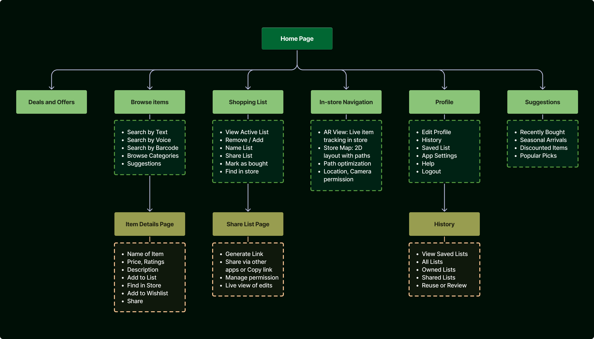
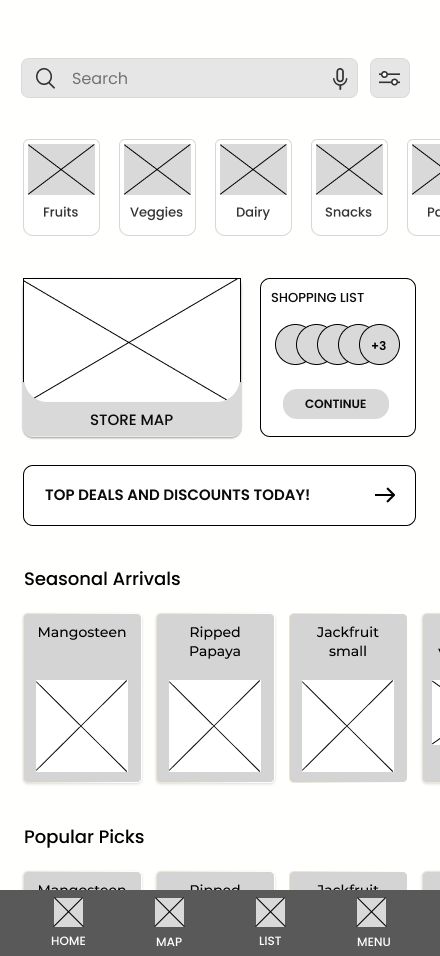
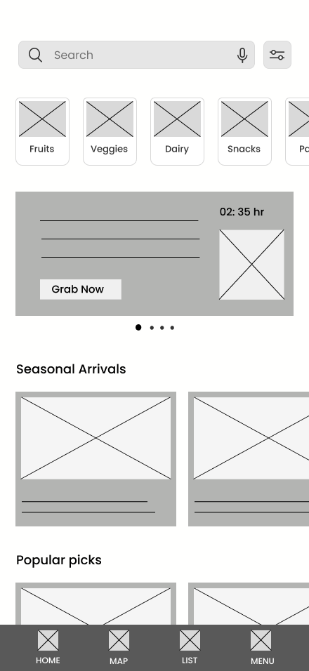
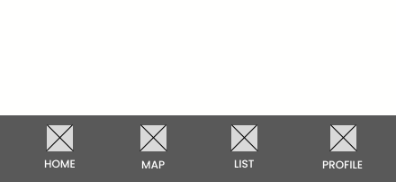
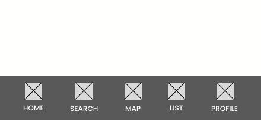
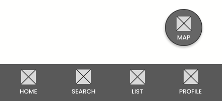
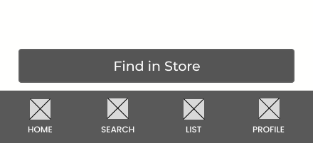

Role
UI/UX Designer
Team
Solo Project
Tools Used
Figma, FigJam
Timeline
Feb 2025 – Jun 2025
“What if grocery shopping felt as smooth as online shopping, but in a real store?”
That’s the whole thing I was trying to sort out with Grovia, my way of making grocery shopping a little less frustrating. So, let’s dive into the story:
The Problem
In today’s fast-paced lives, grocery shopping is still feeling like a tedious chore. Most shoppers waste time finding products and locating them. Wandering through aisles, scanning every shelf, and stopping to ask the staff for help... relatable, right?
Even store owners are feeling the pressure: Dealing with staffing issues, Trying to keep things running smoothly, and Making sure customers actually enjoy the experience enough to come back. It’s not that simple as we think.
The Context - Why Now?
After the Covid lockdowns, more and more people have gotten used to shopping online. It’s quick, easy, and we don’t have to leave the house. Compared to the convenience of online shopping, walking through a store started to feel slow and kind of outdated. Because of that, many grocery stores are still struggling to bring customers back in.
Even in my own neighborhood, I noticed that big stores didn’t really have any smart tech to help shoppers. People looked tired and frustrated, when they couldn’t find everything they needed. That’s when I realized maybe in-person grocery shopping just needed a little upgrade. Something that could make it feel as easy and smooth as shopping online.
The UX Challenge
Shoppers would be actively moving through the store while using the app. Which means, they'd be multitasking between picking up items with one hand and phone in the other. So, the flow needed to be extremely simple and distraction-free. And ofcourse, flexible enough for all kinds of shoppers, no matter their age or level of tech comfort.
Goal of the project:
I followed Design-thinking approach to deeply understand the problem before proposing solutions.
EMPATHIZE
Exploring what users need through real insights
Disclaimer: This is a hypothetical project from my Google UX Certification course. So, I referred to Articles and websites for the secondary research and I visited a local store near my hometown to interact with real shoppers as primary research.
WHAT I NEEDED TO UNDERSTAND
Before starting research, I framed my thinking using the 5W + H method:
-
What is the actual struggle inside this store? Is grocery shopping a tedious process, actually? Is it just about saving time—or is it the confusion and tiredness of walking around not knowing where things are? Do shoppers skip an item when they can’t find it? Why can’t they rely on the staff?
-
Who are we designing this for? First-timers? Regulars who already know the layout still get confused on finding items. People in a hurry? Is it a busy parent with kids? College students? Or maybe elderly shoppers? Understanding who my users are—and the different ways they shop—was key.
-
Is there any particular time, like weekends, rush hours, festive seasons...when the shopping experience is more tedious? When is the store more crowded in a day? How often does the store layout make changes? Timing often tells you more than I expect.
-
Is it right after entering the store? While switching between unrelated aisles? Or when they’re searching for that one last item before checkout? Understanding where exactly users feel stuck might help in designing a perfect solution.
-
Stores have signboards and category labels—so why is the problem still there? Are these cues not enough? Maybe people don’t notice them, or maybe they don’t make sense from a user's perspective. I needed to understand why what exists isn’t working.
-
Do they ask staff? Do they just guess and roam around? Or maybe some give up on certain items altogether? Knowing how users navigate this friction right now matters to think on how the solution fits for them.
-
If shoppers leave annoyed, forget items, or spend less time in-store, that’s a business problem too. Could a better item-location experience lead to happier shoppers and higher sales?
SECONDARY RESEARCH
Also known as desk research. I think this stage is crucial to understand the field, spot gaps and learn about real pain points. Since, i have limitations to do expensive/ time-consuming research processes, this gives me real insights. Here’s what i found:
Contextual Insights
I went through some academic studies, market reports, expert articles, and user discussions to identify common pain points and behaviors within the grocery space.
This research highlighted a clear gap between how stores are designed and how people actually shop.
Competitive Landscape
I explored existing competitor apps, focusing on features, reviews, and usability.
While I gathered some useful takeaways from them, most of them were international, mainly from the U.S. Unfortunately, I couldn’t find any Indian apps with similar in-store navigation features to explore or review firsthand. So yes, this was a limitation, but it also revealed a strong opportunity. The problem exists locally, but solutions don’t.

PRIMARY RESEARCH
To understand the real people behind the problem, I visited a local grocery store in my hometown and talked directly with 4-5 shoppers. I chose this store, since it closely resembled the type of store my app is targeting, in terms of layout, scale, and shopper flow.
On the Ground Research
I didn’t have a strict target persona in mind — but I made sure to include a mix of people from different demographics:
- Elderly shoppers
- Busy working professionals
- Young adults
- People with visible mobility issues
I tried to avoid biases while choosing participants. I noticed people who looked like they might face a problem while shopping, and I approached them.
I introduced myself and made my purpose clear to them, and asked for their permission. Obviously, some people declined to participate. But a few were ready to share their experiences, and I thanked them for their valuable time. I made it clear that there were no right or wrong answers, just honest experiences. I used my native language to make them feel more comfortable.
Based on these interactions, I mapped out key shopper traits and patterns.

Dashboard visualizing key findings from User-Research at grocery store
Key Learnings
Common pain points i noted
- Shoppers feel overwhelmed by long aisles, especially when in a rush.
- They plan in advance but still end up missing items.
- Some rely on staff, but not everyone is comfortable doing that.
- Many avoid certain sections entirely.
- Layout complexity, crowding and stock availability are major concerns
These insights shifted my perspective. "The solution wsn’t just about maps or cool features. It’s about reducing mental effort and making shopping feel less like a chore.
DEFINE
Putting pieces together to define the core need
AFFINITY MAP
To see patterns more clearly, I dumped all my findings onto sticky notes in FigJam and began clustering them. It was a bit messy at first, but gradually, I grouped similar observations and identify recurring patterns in shopper behavior and pain points. The goal was to move from scattered observations to clear, actionable design directions. These groupings helped me uncover deeper user needs, I might’ve missed otherwise.

EMPATHY MAP
At this point, I wanted to go beyond just what people were saying and get closer to how they were feeling. As I began noticing recurring patterns in the affinity map, I realized that evaluating each individual persona in detail might become difficult to refer back to later. So, I created three fictional user stories that collectively represent the eight people I interacted with. These characters emerged naturally as I synthesized emotions, habits, behaviors, and needs from the affinity map. Building empathy maps for these fictional users allowed me to step into real shoppers’ shoes and better understand their mindsets. That’s when I realized : ‘I got closer to designing for people, not just for problems.’


USER PERSONA
Instead of treating personas as a separate step, I built them alongside the empathy maps, letting the insights naturally evolve into relatable human stories. While creating empathy maps, I had already shaped three distinct character types to represent the core user groups I observed during my research. Summarizing these into distinct personas became a key step that shapes everything ahead. A quick reference point to ensure that every design decision I make later truly reflects the people I’m designing for.That means, throughout the design process, I can always come back to these characters to double-check: “Am I designing with them in mind?”


PROBLEM STATEMENT
The patterns, the emotions, the context,.. with all of this in front of me, I was finally able to zoom in and define the actual problem. It wasn’t just “people get lost in grocery stores.” It was more like: “People are overwhelmed, short on time, and need a smarter way to shop without the stress.”
This clear problem statement became the compass for my next steps. I needed to design a solution that feels intuitive, helpful, and actually makes a difference.
IDEATE
Brainstorming ideas and structuring the flow
Shaping the Solution
I began ideation using Crazy 8s, rapidly sketching ideas without overthinking. Drafted the blurred ideas came out to mind. Absolutely, I can’t think they were perfect to move forward.
So, for a deeper clarity I moved to Task Tree and narrowed the experience down to four essential goals:
- Browse and search items
- Prepare Shopping list
- Navigate the store
- Complete the shopping process
This helped me prioritize features for the MVP and avoid over-engineering.

This step help me narrow my focus to the core goals and think in a clear, linear path without overcomplicating things, ensuring the experience stayed simple and intuitive.
Structuring the Experience
User flows mapped every possible path, including edge cases
EDGE CASES, such as
- what happens if a user skips list creation or jumps straight to navigation.
- what if a user need to reuse or edit past list without creating a new one

Sitemap ensured a clear and intuitive information architecture, almost like creating a blueprint for the app.
For instance, Browse Items leads directly to Item Details, where users can quickly add things to their list or locate them in-store. Shopping List goes deeper into collaboration features, like sharing with others or managing edits, because the real scenarios I found from research showed a need to sync grocery lists with families or roommates.

DESIGN
Turning ideas into real, usable screens
WIREFRAMING
This stage was less about visuals and more about ensuring that every section had a clear purpose and could be accessed easily.
I jumped straight into mid-fidelity wireframes, focusing on framing the screens and flows that mattered most for the app. The first iterations I created:
Iterations
Each iteration was tested conceptually against user needs and pain points
#1 Home screen

Primary goals stood out: Most users immediately search or browse for items, rather than accessing the store map or reviewing a pending list.
Hick’s Law in action: Too many Choices at once could overwhelm users, especially for less tech-savvy users. Fewer, clearer choices make decisions quicker.
Real-world constraints: Shoppers often use the app one-handed while managing a cart. This means accessibility considerations (Situational accessibility) are essential.
Weak Visual Hierarchy: The elements were competing for attention, leading to decision fatigue.
Navigation Depth: Every element here leads to another screen, (deals, map, list). It also increases the number of taps to reach the final goal.

Solution:
I applied Progressive Disclosure, surfacing only the most urgent actions first: Search, followed by a high-priority offers section, then content blocks grouped by theme.
A clear Visual hierarchy helped organize this flow, while Gestalt principles like proximity and similarity guided how I grouped seasonal and popular items.
I also considered Thumb ergonomics, ensuring that primary CTAs remained within easy reach for one-handed use.
#2 Navigation flow
Initial Design
I started by placing only the essential set of tabs to avoid overwhelming users. On the homepage, users could add items to a list or access the store map or view their profile. All as separate tabs in Bottom navigation bar.
While this version was clean, it lacked quick access to search, a critical step for the majority of users to move forward.

Need for Exploration
So I added "Search" tab to improve usability. Although functional, the the flow still broke after list creation. Users often had to return to the homepage or navigate via the bottom nav bar. Users have to think, what to do next? That’s a UX failure.

Floating Map Button
I introduced a Map FAB on the Shopping List screen. Since:
- Matched the user’s intent after list creation
- Always visible and accessible, avoiding the need to scroll (For long lists).
- Ensures the most important action is easy to reach (Fitts' Law).

“Find in Store” CTA
However, through further exploration, I realized that FAB wasn't always discoverable for less tech-savvy users. Additionally, the map itself introduced multiple actions (e.g., AR navigation and store layout), which could confuse users.
To resolve this, I replaced the FAB with a clear, contextual sticky CTA button: "Find in Store". The wording explicitly communicates the action and making the purpose obvious.

What Made the Difference
- Core navigation remained minimal (Home, Search, List, Profile).
- The primary goal — finding items in-store was visually prioritized.
- Decision-making was simplified using Hick’s Law
- Clear language replaced ambiguous icons
#3 Shopping List
The initial list followed familiar patterns, but deeper observation revealed how small interactions were adding unnecessary mental load.

1. Cognitive Load → Category Grouping (Gestalt)
To reduce overwhelm in long lists, Items are grouped by category using Gestalt principles, helping users scan faster. This structure also mirrors real store layouts, connecting the digital experience with the real-world shopping flow.
2. Accidental Taps → Intentional Actions
The destructive “X” icon caused frequent accidental deletions. I replaced it with checkboxes, aligning with natural “check-off” behavior while allowing undo. Deletion is rare and buying is the primary goal.
3. Share Icon Placement → Improved Discoverability
The share icon was moved to the top-right, following common mobile conventions. This reduced decision time and improved discoverability, which is critical since sharing and collaboration is an essential part in the listing stage.
4. Add Item Option → Focused Review Mode
The always-visible “Add Item” option was removed from this screen to prevent interruptions. Since, Item addition can be done directly through search or suggestions, a dedicated icon for it is not always relevant.
5. Ambiguous CTA → Contextual CTA
A dedicated “Find in Store” button was added, tailored to the current context. Users building or viewing a list often want to locate items next. This simple, clear CTA aligns with the logical flow of the shopping journey.
MOCKUPS
Honestly, this is the stage where I spend the most time patiently refining details. Rather than presenting static screens, I wanted to show the ‘why’ behind every design decision.
Log-in screens

- Minimal, single-field login to avoid friction
- Email verification is sufficient (no payments or sensitive data)
- Alternative login with Google / Apple for faster access
- Skip-login option letting users explore before committing
- Support access available at every step to avoid dead ends
Onboarding screens

- Short 3-step onboarding explaining the core value quickly
- All required permissions grouped into one screen to reduce repeated pop-ups
- Clear permission explanations to build trust
- Building clarity & confidence in the app from the very start
Home browsing

- Categories follow the physical store order for familiarity
- Store status (“Open”) instantly tells store availability, reducing wasted trips
- Structured to catch users eye without feeling pushy.
- Product cards with Thumb-friendly CTAs supporting one-handed use
- From Price to origin, all useful info's are arranged in a simple, logical order.
- Quick filter tabs helping users decide faster
- Key actions “Add to List” and “Find in Store” placed side by side, keeping next steps obvious and smooth.
Search items

- Recent searches & Smart suggestions removes the effort of thinking.
- Supports exploration without typing
- Voice search added for accessibility and ease
- Search Results follow the same grid pattern as browsing for consistency
Shopping List

- Clear empty state with “Browse Items” CTA for first-time users.
- Items grouped by category for faster scanning and checking off
- Collaborative lists with clear ownership labels to keep everyone in sync
- Built on the mental model of a handwritten shopping list
- Multiple navigation options tailored to user preferences
Navigation flow

- Navigation designed to feel like clear guidance, not a complex tech feature
- AR as the default item-finding experiencee, while Store map as a fallback, giving users flexibility
- Guided AR setup with visual cues and progress indicators
- Minimal AR Interface with thumb-reachable actions and optional voice guidance for hands-free use
- Store map provides a clear, traceable path for users who prefer a full layout view
- Automatically saves the list to History in the background once shopping is complete
Overall, the strategy was to blend innovation (like AR) with familiar patterns, ensuring the app feels modern yet approachable for all shoppers.
Other Screens

- Action-first notifications with clear CTAs, time cues, and filters to focus on what matters
- History designed for quick reuse, letting users restore and edit past lists instead of starting over
- Recognition over recall, using filters, search, and key list details to reduce effort
TEST
Evaluating the design with real users and refine
USABILITY TEST
To refine the experience, I did some usability testing to really understand how people were using the app. Watching them interact with the design helped me catch small but important issues that I hadn’t noticed during wireframing. This phase taught me a lot about how users actually think, what confuses them, and how even tiny changes can make the whole experience feel way more smooth and intuitive.
Moderated Usability Study
Disclaimer: This was an informal usability study done with people around me. While it wasn’t a full-scale user lab test, I still gained meaningful insights by observing real reactions to the prototype.
Goals
The main goal was to test whether users could easily complete key tasks using the prototype. I mainly wanted to know:
- Can users do the tasks easily without guidance?
- Do users get confused or stuck anywhere?
- How does the app feel in overall?
Participants
I tested the prototype with 3 people around me who had experience with in-store grocery shopping. Since this is a personal project, I not chose formal participants, but real everyday shoppers who could give me honest, instinctive feedback.
Task scenarios
Participants were asked to complete the following tasks without instructions:
- Add “Black plums” and “Bread” to a shopping list
- Navigate the store using AR
- Mark an item as bought
- Restore a previous shopping list
- Share a list with another user
I observed interactions silently and gathered feedback after task completion. These insights directly informed the design iterations that followed.
Iterations
Each iteration was tested conceptually against user needs and pain points
#1
ISSUE: Some users (40+ with mild vision challenges) struggled to see the green navigation path against the store background.
- Replaced green with a brighter blue path.
Why it worked:
- Higher contrast improves instant visibility
- Blue is commonly associated with navigation cues
- More inclusive for users with vision or color-blindness challenges
The route became immediately noticeable and easier to follow without extra effort.

Before vs After: Path Visibility That Works for Everyone
#2
ISSUE: Users mistook the “+” icon for an “add to cart” action due to common e-commerce patterns.
- Added system feedback showing the recently added item
- Introduced a quick “View List” CTA
Why it worked:
- Applied the visibility of system status principle
- Users felt more certain about their actions and hesitated less while adding items.

A simple feedback that instantly makes it clear, what happens when you tap ‘+’
Future Opportunities
If this project were to move forward, these are the areas I’d explore next:
- In-App Self-Checkout: Enabling scan-and-pay within the app, So that users can skip long queues and complete their purchases without relying on store staff.
- Personalized In-Store Suggestions: Analyzing what users usually buy or which sections they visit most, to surface relevant deals and product recommendations, helping users shop faster and discover items they actually need.
What This Project Taught me
- Designing with real users consistently challenged my assumptions. Observing actual behavior revealed frictions I hadn’t considered during early design stages.
- Building a simple experience is far more difficult than adding features — but it creates the biggest impact. Clarity and ease of use matter more than complexity.
- I learned to balance intuitiveness for first-time users with efficiency for repeat users, while keeping inclusivity at the core of every decision.
- Most users don’t read; they scan. Visual clarity and hierarchy often matter more than clever UI patterns, while still supporting accessibility needs.
- Design is never really done. Testing repeatedly showed me that good design emerges through iteration — by trying, learning, and refining, not by aiming for perfection upfront.